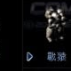

最基礎的人形地面單位，特殊功能多，升級速度快。基本武器為火焰噴射器，無法對空。
| 名稱 | 技術等級 | 複雜度/重量/空間 | 能量消耗 | 說明 |
|---|---|---|---|---|
| MCD 安瓿 | 16 | 10/10/5 | 200 KJ | 治療機械型單位 |
| UCD 安瓿 | 16 | 10/10/5 | 200 KJ | 治療人類型單位 |
| 懸浮 | 27 | 13/19/22 | 25 KJ | 不留腳印 |
| 偽裝（Spyon） | 29 | 15/15/16 | 30 KJ | 偽裝 |
| 隱形裝置 | 41 | 19/23/11 | 40 KJ | 隱形 |
| 電擊 | 43 | 16/9/9 | 800 KJ | 麻痺敵人移動 |
| 微型治療 | 52 | 15/22/11 | 200 KJ | 治療 |
| 計時治療 | 52 | 15/22/11 | 200 KJ | 修理 |
| 代謝強化 | 55 | 23/12/13 | 40 KJ | 加速移動 |
| 電擊 II | 64 | 20/12/13 | 800 KJ | 麻痺敵人移動 |
| 代謝強化 II | 96 | 25/13/15 | 70 KJ | 加速移動 |
| 名稱 | 技術等級 | 攻擊力 | 射程 | 射速 | 攻擊模式 | 類型 |
|---|---|---|---|---|---|---|
| 火焰噴射器 | 1 | 22 | 10.0m | 1.3s | 僅對地 | 火焰 |
| A1 戰鬥步槍 | 6 | 21 | 15.0m | 0.7s | 地空 | 槍彈 |
| Flame-I | 12 | 33 | 10.0m | 1.3s | 僅對地 | 火焰 |
| A2 戰鬥步槍 | 19 | 33 | 15.0m | 0.7s | 地空 | 槍彈 |
| Flame-II | 23 | 46 | 10.0m | 1.3s | 僅對地 | 火焰 |
| Flame-III | 32 | 57 | 10.0m | 1.3s | 僅對地 | 火焰 |
| A3 戰鬥步槍 | 40 | 45 | 15.0m | 0.7s | 地空 | 槍彈 |
| Flame-IV | 50 | 67 | 10.0m | 1.3s | 僅對地 | 火焰 |
| A4 戰鬥步槍 | 53 | 57 | 15.0m | 0.7s | 地空 | 槍彈 |
| 苯火焰 | 61 | 78 | 12.0m | 1.3s | 僅對地 | 火焰 |
| 瓦斯禿鷹 | 71 | 94 | 12.0m | 1.3s | 僅對地 | 火焰 |
| A5 戰鬥步槍 | 76 | 68 | 15.0m | 0.7s | 地空 | 槍彈 |
| 超火焰 | 80 | 108 | 12.0m | 1.3s | 僅對地 | 火焰 |
| A6 戰鬥步槍 | 92 | 83 | 15.0m | 0.7s | 地空 | 槍彈 |
| 雙苯火焰 | 97 | 120 | 12.0m | 1.3s | 僅對地 | 火焰 |
| 重型苯火焰 | 110 | 135 | 12.0m | 1.3s | 僅對地 | 火焰 |
| A7 戰鬥步槍 | 112 | 97 | 15.0m | 0.7s | 地空 | 槍彈 |
| 貓步槍 | 123 | 113 | 15.0m | 0.7s | 地空 | 槍彈 |
| 氦苯火焰 | 135 | 144 | 12.5m | 1.2s | 僅對地 | 火焰 |
資料來源：Ever☆Zone Tistory /105